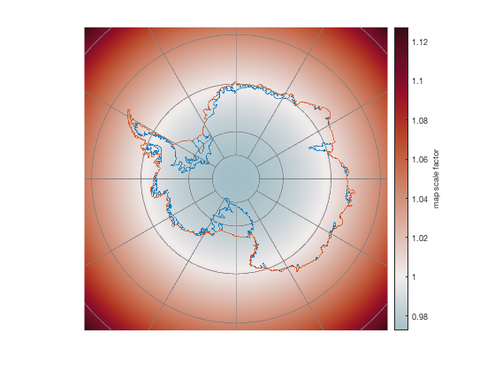
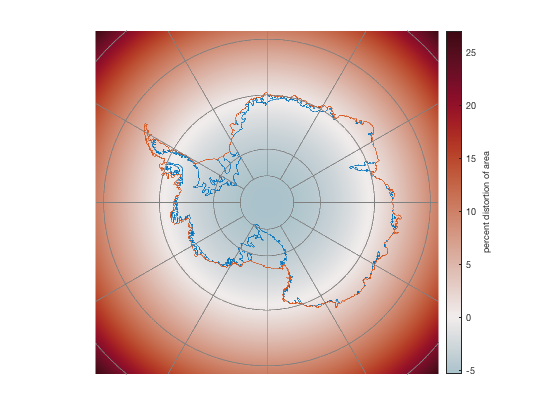

psdistortion documentation
psdistortion approximates the map scale factor for a polar stereographic projection. It is the ratio of distance on a ps projection to distance on a sphere.
The equation is:
1 + sin(TrueLat)
m = -------------------
1 + sin(lat)and is from Eq 3.3 of Numerical Weather and Climate Prediction by Thomas Tomkins Warner (2011). Cambridge Univ. Press.
This function is part of Antarctic Mapping Tools for Matlab (Greene et al., 2017). Click here for a complete list of functions in AMT.
Contents
Syntax
m = psdistortion(lat) m = psdistortion(lat,TrueLat)
Description
m = psdistortion(lat) gives the ratio of distance on a polar stereographic projected map to distance on a sphere. Where m is greater than 1, the polar stereographic projection exaggerates (lengthens) the distance compared to reality. Where m is less than 1, projected distances are shrunk compared to reality.
m = psdistortion(lat,TrueLat) specifies a latitude of true scale. Default is the standard -71 degrees.
Example 1: Distance
Here's a grid that is 7000 km wide, at 5 km spacing, centered on the South Pole. Get the map scale factor at each grid point:
[lat,lon] = psgrid(-90,0,7000,5); m = psdistortion(lat); pcolorps(lat,lon,m) axis tight off cb = colorbar; ylabel(cb,'map scale factor') cmocean('bal','pivot',1) % optional colormap, centered on 1 antbounds gl antbounds coast graticuleps
Not surprisingly, the map scale factor is 1 at 71 S, because that's the latitude of true scale.
Example 2: Area
Of course, area distortion is related to distance distortion squared. Below let's plot just the percentage of distortion
% Percent Area distortion: A = 100*(m.^2 - 1); figure pcolorps(lat,lon,A) axis tight off cb = colorbar; ylabel(cb,'percent distortion of area') cmocean('bal','pivot') % optional colormap, centered on 0 antbounds gl antbounds coast graticuleps
Citing AMT
If this function or any other part of Antarctic Mapping Tools is useful for you, please cite the paper that describes AMT.
Greene, C. A., Gwyther, D. E., & Blankenship, D. D. Antarctic Mapping Tools for Matlab. Computers & Geosciences. 104 (2017) pp.151-157. doi:10.1016/j.cageo.2016.08.003.
Author Info
This function was written by Chad A. Greene of the University of Texas Institute for Geophysics (UTIG), April 2017, for inclusion in the Antarctic Mapping Tools package.